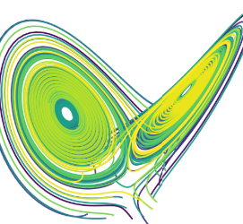

Our working environment#
1 | Jupyter#

Project Jupyter develops and provides various tools, standards, and services for a range of purposes. The word “Jupyter” originates from combining three popular programming languages in data science: Julia, Python, and R, but now it has become a symbol of the community who are engaged with each other using Jupyter tools.
This course will introduce many of Project Jupyter’s products, which are great ways to explore open science practices.
🛠️ Try Jupyter#
Go to the Project Jupyter landing page, scroll down to the JupyterLab project, and hit “Try it in your browser.” Then hit “JupyterLab” in the Applications Section. You will be entering a web server using JupyterLab interface as an entry point.
🚩 Task: Try to execute the Python cell in Intro.ipynb and reproduce the figure with many yellow-green-blueish dots!
🚩 Task: Navigate to Lorenz.ipynb and open it. Execute several cells until you see an interactive widget showing the results of a Lorenz system.
❓ Question: Can you adjust the parameters so that the system looks like this?

2 | Callysto#

As a non-profit program aiming to improve teaching data science in Canada, Callysto provides lots of materials and learning modules for K-12 classrooms. Callysto also hosts the Callysto hub, a free online Jupyter server (JupyterHub) pre-loaded with these modules.
We will be using Callysto Hub throughout the course as a platform for the hands-on session. This is not a requirement, though, if you are willing and able to install JupyterLab or Jupyter Notebook on your local machine.
🛠️ Try Callysto#
Go to Callysto Hub landing page and sign in. You’ll need a Google or Microsoft account for this.
Once you are logged in and activate Jupyter, you can see a Jupyter Notebook landing page with a URL as https://hub-xx.callysto.ca/jupyter/user/xxx..../tree. This is Jupyter Notebook’s tree view interface. If you double-click getting-started.ipynb, a Notebook view browser page will pop up showing the content of the notebook.
🚩 Task: While you are on the tree view page, switch to the JupyterLab interface by changing the URL to https://hub-xx.callysto.ca/jupyter/user/xxx..../lab (i.e., by replacing tree with lab). Now you should be able to see a similar interface we explored during the previous task. In fact, the JupyterLab interface is like Jupyter Notebook 2.0 for some people.
🛠️ Callysto’s learning modules#
Now go back to Callysto’s project page, scroll down, and hit the “Browse learning modules” button. Here you can find lots of resources for K-12 teachers. Locate the “Climate Change” module and hit “Click”. Now the relevant content has been imported into your account space in the Callysto Hub. You should be able to view the content climate-change.ipynb now.
🚩 Task: Execute the cells to visually explore Evidence 1 & 2 for the rapid climate change.
❓ Question: Where is climate-change.ipynb located relative to your home directory?
3 | More resources#
Here are some links to help you get familiar with JupyterLab, Linux (on which JupyterLab is built), and BASH.